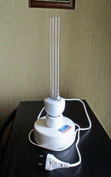

Китайские врачи работают почти сутками, без выходных, спят зачастую на рабочих местах…
АНАМНЕЗ ЗАБОЛЕВАНИЯ (с привлечением образов)
● Блокировав либо тихо перебив сторожевой отряд живущих на миндалинах микроорганизмов и не дав им оповестить иммунную Систему о вражеском нападении, коронавирусы, незамеченными этой Системой, проникают в организм. Далее – дело техники: вирус лишает клетку инструмента опознавания ею инородного тела “свой-чужой”, захватывается ею и проникает внутрь ядра. Где начинает интенсивно размножаться - в одной клетке за счет ее ресурсов (пока она не погибла) формируется несколько тысяч вирусов.
● После чего из погибающей клетки выходит уже многочисленный отряд коронавирусов, выбрасывая при этом в межклеточную жидкость, лимфатическую и кровеносную систему порцию токсических отходов. В связи с чем у человека поднимается температура, его начинает лихорадить. Каждый вышедший из клетки вирус ищет и внедряется в следующую здоровую клетку легочной (первой на пути проникновения вирусов) ткани, а также других внутренних органов человека.
● При достижении определенного насыщения иммунная Система обнаруживает нападение, размножение вирусов и поражение ими тканей внутренних органов. В результате указанного обнаружения масштабного захвата территории врагом Система срабатывает в режиме т.с. “панической атаки”. То есть максимально генерирует бойцов (Т-лимфоциты, макрофаги и проч.) для уничтожения вирусов и зараженных ими клеток организма.
● В итоге больше всего страдает легочная ткань – иммунная Система в ответ на вторжение начинает уничтожать вирусы и зараженные ими клетки. Как результат уничтожения ткани, в легких образуется отек, они перестают в должной мере снабжать организм кислородом. И даже подключение человека к аппарату ИВЛ и прочие медицинские процедуры могут не помочь – человек умирает от нехватки кислорода, т.е. удушья (асфиксии). Официальный диагноз смерти – “атипичная пневмония”.
● “Медики КНР зарегистрировали 195 случаев повторного заражения коронавирусом в Ухане”.
Тревожная новость, которая отражает один из двух вариантов (или оба вместе):
- Либо заразившихся лечили не тем и не так. В настоящее время китайские специалисты применяют два старых препарата - китайского и советского производства. А также проводят проверку разработанной вакцины на грызунах (возможно, к концу года начнут промышленный выпуск).
- Либо штамм коронавируса оказался слишком сложным. Т.е. он не только не вызывает в течение 2-3 недель ответной иммунной реакции организма, но и по какой-то причине не дает у выздоровевших сформироваться иммунитету к данному штамму.
Как результат – повторное заражение.
● "При тяжелой форме заболевания коронавирус атакует гемоглобин в эритроцитах и делает их неспособными транспортировать кислород к клеткам. В таких случаях искусственная вентиляция легких является бесполезной".
Источник
Это правильно.
Однако остается вопрос: ПОЧЕМУ коронавирус у одних людей атакует гемоглобин в эритроцитах, а у других вообще проходит бессимптомно? Разные штаммы коронавируса - природный (который давно живет в природе вместе с нами) и лабораторный? Или различное воздействие на организм разных модификаций базового штамма SARS-CoV-2?
ПЕРЕЧЕНЬ ПОРАЖЕНИЙ ОРГАНИЗМА (вследствие атаки коронавируса COVID-19)
● Заражение и частичное уничтожение (вирусами, а затем и иммунной системой) клеток легочной ткани. Начало кислородного голодания организма.
● Отек легких, усиление кислородного голодания (вплоть до асфиксии).
● Мощная интоксикация организма, в т.ч. высокое содержание токсинов и патогенов в межклеточной жидкости, лимфатической и кровеносной системах.
● Заражение вирусом клеток ткани почек, печени, селезенки и т.д., возможны сбои в работе поджелудочной железы.
● Накопление патогенов и токсинов в толстом кишечнике (с уничтожением здоровой микрофлоры в ЖКТ).
● Угнетение центральной нервной системы.
ТЕЗИСНО ОБ ИЗЛЕЧЕНИИ (авторская методология)
Как ни странно, но процесс борьбы с коронавирусом во многом аналогичен фрагменту старого советского фильма “Выстрел в тумане” (1963 г.), где:
- коронавирус - враги,
- целитель, который в режиме ПЛОТНОГО контакта с больным наверняка заразится вирусом (без всякой гарантии на свое последующее излечение);
- иммунная Система – Госбезопасность с приданными ей регулярными войсками.
1. ПРОЦЕДУРЫ
1.1. Закапывание (ингаляция) носа препаратом, содержащим интерферон. Интерферон – наиболее эффективное вещество для уничтожения любых вирусов.
1.2. Курс очистительной клизмы теплым (38-39 град.) отваром ромашки с добавлением 1 ч. ложки питьевой соды на 1 л отвара (5-6 дней подряд). Очищает кишечник, в т.ч. от токсинов.
По новым данным, вирус SARS-CoV-2 присутствует и размножается не только в легких, но и в верхних дыхательных путях, а также в кишечнике человека. К такому выводу пришли ученые из Германии и Великобритании под руководством Романа Вельфеля из Института микробиологии Бундесвера. Результаты их работы были опубликованы в журнале Nature 1 апреля.
https://www.nature.com/articles/s41586-020-2196-x
Вполне предсказуемо. Так что трехведерная очистительная клизьма не менее, а даже более эффективное средство (в т.ч. для промывания мозгов у некоторых) от Covid-19, чем аппараты ИВЛ, по которым нынче многие страны буквально сходят с ума.
1.3. Прием эфирного масла чайного дерева (3 капли на 1/3 стакана воды). Мощный антисептик, не позволяющий присоединиться к вирусной атаке еще и бактериальной инфекции, что происходит достаточно часто.
1.4. Лечебный массаж спины и точечный массаж стоп ног, в процессе которого делается акцент на:
- проработку паравертебральных околопозвоночных зон спины. Через корешковые окончания нервов, выходящих в данные зоны и связанных со всеми внутренними органами, нормализуется работа органов и соответственно повышается их сопротивляемость вирусной атаке;
- акупрессуру зоны проекции легких на стопах ног (улучшает функциональное состояние легких);
- рефлекторный массаж легких со стороны спины - зон вокруг лопаток (с закрученной за спину рукой и приподнятой лопаткой). Активизируется приток крови к легочной ткани, что повышает сопротивляемость ее клеток воздействию патогенов (вирусов и бактерий).
1.5. Три упражнения китайской лечебной гимнастики Цигун (в правильном исполнении, разумеется), которые в целом полезны для системы дыхания. Кроме того они улучшают состояние психики (поочередно мобилизуя и расслабляя ее), а также рекомендуются для нормализации эндокринной системы, вырабатывающей гормоны.

1.6. Облучение ультрафиолетовой лампой помещения, где находится больной (и желательно - соседние помещения). При этом уничтожается большинство известных патогенных микроорганизмов: вирусов, бактерий, грибков и палочек.
Для домашних условий рекомендую ультрафиолетовый бактерицидный облучатель ОБ-3 “Фотон” с таймером.
Непрерывная работа до 9 час, суммарный ресурс работы 8000 час. Эффективность бактерицидного действия УФ-излучения (поражает ДНК микроорганизмов) в помещениях составляет 90%. Так, в помещении 20 кв.м с высотой потолка 3 м вирусы гриппа уничтожаются за 1,5 часа работы облучателя. Поставить в комнату “Фотон” на 2 часа (по таймеру) и порядок.
2. ПИТАНИЕ
2.1. Ламский суп из рецептуры древней Тибетской медицины. Гарантированно восстанавливает пораженную легочную ткань. Состав: мелко нарезанные куски баранины, нарезанный корень имбиря, чеснок, лавровый лист, черный перец горошком, соль по вкусу. Варится при закрытой крышке на медленном огне в течение 30-35 минут. Употреблять в горячем виде.
Отметим, что состояние легочной (“жирозависимой”) ткани напрямую зависит от употребления ЖИВОТНОГО жира. Некоторые врачи советуют прием 20 г сливочного масла в сутки (можно – с теплым молоком и медом) или свиного сала, хотя бараний жир эффективнее. Кроме того животный жир можно принимать в свое удовольствие, например, в виде:
♦ сметаны с винегретом (свекла, картофель, соленые огурцы, лук, чеснок, имбирь);
♦ сметаны с салатом (помидоры, огурцы, черный перец, лук, чеснок, имбирь);
♦ мацони (у кого нормально с кислотностью): сметана, чеснок, черный перец, соль;
♦ бутерброда с маслом и соленым огурчиком сверху.
Сметана однозначно улучшает вкус борща или овощного супа (крылышки цыпленка, картошка, морковь, свекла, куркума, лук, чеснок, имбирь, черный перец горошком, душистый перец, лавр, базилик, розмарин и т.д.). Про такой деликатес как холодец уже не говорю…
2.2. Бульон из тыквы, имбиря, редьки (если нет повышенной кислотности), чеснока и базилика с добавлением крепкого отвара из листьев амаранта.
♦ Амарант содержит сквален, способствующий кислородному насыщению организма, что очень важно при масштабном поражении легких. Кроме этого, сквален способен повышать силу иммунной системы организма в несколько раз, обеспечивая тем самым его устойчивость к различным заболеваниям.
♦ Тыква очищает толстый кишечник, благотворно влияя на развитие здоровой микрофлоры в ЖКТ. Содержит высокий процент калия (необходимого для сердца), полиненасыщенные жирные кислоты, а также витамины группы В, которые:
- нормализуют состояние сердечно-сосудистой системы;
- улучшают работу кишечника,
- поддерживают нервную систему, эмоциональное здоровье, помогают справляться со стрессами, депрессиями, повышенными эмоциональными нагрузками;
- участвуют в росте клеток, энергообмене и работе мышц;
- укрепляют иммунитет и увеличивают сопротивляемость организма различным заболеваниям.
♦ Базилик:
- защищает организм от патогенов, подавляя их рост и размножение,
- снижает уровень плохого холестерина,
- защищает печень,
- нормализует процессы обмена веществ, в т.ч. помогая работе поджелудочной железы по выработке необходимых ферментов.
♦ Имбирь, редька и чеснок, кроме всего прочего, отлично очищают межклеточную жидкость, сосуды лимфатической и кровеносной системы, в т.ч. от токсинов, предотвращая интоксикацию организма.
2.3. Продукты, содержащие повышенную концентрацию железа, чьи ионы захватывают молекулы кислорода и доставляют ко всем клеткам организма (хурма, антоновка, курага, гранат, гречка и т.д.).
2.4. Салат из отварной свеклы (икра) с чесноком и редькой. Все три ингредиента в том числе очищают сосуды кровеносной и лимфатической систем от шлаков, токсинов, плохого холестерина и прочих вредных загрязнителей.
2.5. Яблочный пектин, очищающий сосуды (наряду с витаминизацией организма и т.д.).
2.6. Мед и перга, содержащие почти все микроэлементы, необходимые для нормального функционирования организма. В т.ч. полезны для пропотения с выведением токсинов.
2.7. Цикорий (растворимый напиток):
- оказывает успокаивающее действие на ЦНС,
- нормализует работу желчного пузыря и печени, повышает выделение мочи,
- обладает обезболивающим, жаропонижающим и потогонным действием,
- благотворно действует на селезенку и почки, выводит: токсины, слизи, соли и шлаки,
- нормализует работу поджелудочной железы, улучшает обменные процессы в печени.
2.8. Малиновое варенье – для пропотения, а также получения позитивных эмоций, благотворно влияющих на психику (управляющую всей соматикой, включая иммунную Систему).
3. ОТВАРЫ (не из пакетиков)
3.1. Корень солодки (2-3 полных глотка 2-3 раза в сутки). Отводит лишнюю жидкость из легких, что особенно важно при их отеке. Также китайскими и тайскими учеными был зафиксирован значительный эффект солодки в противостоянии коронавирусу SARS (эпидемия в КНР 2002 г.). Предполагается, что данный отвар также должен быть эффективен - в режиме профилактики (дабы не заболеть) и лечения - и при остальных разновидностях коронавируса.
3.2. Ромашка лечебная. Очищает печень, эффективный антисептик, нормализует состояние ЖКТ.
3.3. Листья малины и липовый цвет для вывода токсинов через потоотделение, а также листья брусники, очищающей почки.
3.4. Мята:
- нормализует функции ЦНС,
- улучшает кровообращение,
- очищает сосуды, выводя холестериновые отложения,
- полезна при заболеваниях дыхательных органов, обеззараживает ротовую полость,
- благотворно влияет на процессы в ЖКТ,
- сорбирует токсины, радионуклиды, тяжелые металлы и удаляет их из организма,
- благоприятно воздействует на функции желчного пузыря, печени и почек, а также органов мочеполовой системы.
4. ДОБРОТА И ЗАБОТА
Поддержание Духа и работа с основными чакрами на теле человека. Через последние происходит обмен жизненной энергией (“ци”) между организмом и Космосом. В т.ч. дополнительное поступление энергии, необходимой для сопротивления человеческого организма патогенам.
ВМЕСТО ЭПИЛОГА
♦ В начале 2019 г. от одного из своих пациентов я подхватил мощный вирус. Первую неделю инфекция вела себя малоактивно, вследствие чего я надеялся, что зараза уйдет сама собой (как это и случалось последние 30 лет). Да и лечить самому себя не интересно... Затем началось типовое проявление гриппа, который я блокировал примерно за двое суток. Но самое интересное произошло потом.
Судя по симптоматике, в организме стала на удивление мощно развиваться болезнь, которую медики последние годы называют “атипичной пневмонией” (высокий коэффициент летальности). И только тогда, почуяв неладное, я начал максимально серьезно лечиться, применяя почти всё, что перечислено выше в приведенном материале. Четверо суток потел как мышь, постоянно меняя футболки и наволочки на подушке. На пятые сутки стало легче. Еще через двое суток пришел в нормальную (рабочую) форму.
♦ Советы российских врачей, в т.ч. профессоров и академиков: “Мойте руки, периодически протирайте их спиртовым раствором, ведите здоровый образ жизни”.
А также недавно “выяснилось”, что марлевые маски, цена на которые в российских аптеках выросла в N раз (кому война, а кому мать родна), против вируса малоэффективны…
♦ СМИ: Академик РАМН П.Воробьёв уверен, что никакой эпидемии коронавируса нет даже близко, и речь идет всего лишь о “локальной вспышке не изученной ранее болезни”.
Китай так и не передал России штамм коронавируса COVID-19. А вот это уже из ряда вон выходящее событие. Известный российский врач-инфекционист В.Никифоров в связи с этим задался вопросом: “Почему скрывают? Может, у них ничего нет и ситуация полностью выдуманная?”.
♦ СМИ: “Герман Греф готов выделить ученым грант на разработку лекарства (вакцины) от коронавируса”.
Неплохой пиар-ход, простенько и со вкусом, типа мы тоже, понимашь… Еще бы осознание Грефом того, что любая антивирусная вакцина создается (в течение не менее года), как правило, для вчерашнего штамма, а не сегодняшнего. Вчерашнего вне зависимости от естественного или лабораторного происхождения штамма.
♦ СМИ: “Греф предложил помощь государству в распознавании лиц под марлевой маской”.
Идеал для НЕЛЮДИ - это когда все ЛЮДИ пересчитаны, распознаны, просвечены (в т.ч. в постели, в туалете, в кастрюле с едой), дистанционно измерены и т.д. При необходимости же - мгновенно найдены, захвачены, изолированы, а там уже как повезет.
Именно к этому стремятся заказчики и их шестерки под любыми предлогами: повышение уровня жизни населения, укрепление правопорядка в стране, цифровизация экономики, а теперь вот - коронавирус... Раньше все клялись и вставали рядом в борьбе с международным терроризьмом. Нынче, похоже, все должны встать плечом к плечу в борьбе против коронавируса.
♦ О версии лабораторного происхождения уханьского коронавируса.
На мой взгляд, основным аргументом в пользу лабораторного происхождения штамма коронавируса COVID-19 является достаточно много случаев отсутствия выработки организмом иммунитета к данному штамму (если верить китайским СМИ). Даже переболевшие в начале XX в. "испанкой" (вирусом гриппа штамм H1N1), "выкосившей" более 40 млн. людей, повторно не заболевали вследствие выработки иммунитета. А тут в пределе можно заражаться столько раз пока, в конце концов, не умрешь (одновременно отвлекаются огромные ресурсы государства на повторную госпитализацию, уход и лечение).
♦ Что касается эпицентра возникновения вируса, то здесь нет ничего особенного – в Ухани расположена одна из семи китайских биолабораторий (которая тесно сотрудничает с коллегами из США). Кому выгоден такой вирус - настоящий или “неизученная ранее болезнь”? Как США, так и Китаю, в связи с чем не исключаю наличия договоренности сторон.
♦ Билл Гейтс сравнил коронавирус с пандемией «испанки» начала XX века
Источник
“Благодетель” человечества Билл Гейтс отметил, что “во время пандемии вакцины, противовирусные препараты не должны продаваться по высокой цене”.
Н-да, каждый старается этот коронавирус максимально использовать в своих целях. Любопытно наблюдать за не в меру хитроумными (мягко выражаясь) деятелями, среди которых:
Теоретики пытаются обосновать развал мировой системы капитализма с доминированием финансового капитала (в т.ч. основанного на ссудном проценте – деньги из воздуха) не ее античеловечностью, а появлением коронавируса.
Практики пытаются ослабить, а то и вовсе заблокировать своих основных экономических конкурентов на планете.
Нелюди, мечтающие о кардинальном сокращении численности населения Земли с чипированием оставшихся и превращением их в биороботов, “случайно” изобретут чудодейственную вакцину от коронавируса. После чего начнут данную вакцину, содержащую наночипы, продавать всем странам по чисто символической цене.
Но для осуществления своих мечтаний всем трем разновидностям очень нужна одна вещь – раздувание мировой истерики о вездесущности и сверхвысокой летальности уханьского коронавируса.
Не исключаю, что власти ряда стран, не выдержав давления ревущих со всех сторон “иерехонских труб”, согласятся на тотальную вакцинацию своего населения чудодейственной вакциной Билла Гейтса. А что такая будет представлена (его структурами) мировому сообществу уже в этом году, сомнений почти нет…
♦ СМИ: “Новая версия появления коронавируса COVID-19”
“Появление рекомбинантной РНК могло быть обусловлено проникновением РНК вируса в бактерию Синтия и «списыванием» информации с ДНК этой бактерии”.
https://via-midgard.com/news/article/novaya-versiya-poyavleniya-koronavirusa-covid19.htm
Остается только надеяться, что указанная версия об участии в патогенезе SARS-CoV микоплазменной - химически синтезированной, безклеточной (на которую не действуют антибиотики) - бактерии “Синтия” ошибочна. В противном случае для снижения разрушающего воздействия данной бактерии исследователи предварительно рекомендуют прием пищевой соды. Суть позитивного эффекта от такого приема в борьбе с Синтией может состоять в следующем. Пока она жрет углерод питьевой соды и не трогает клетки организма, у заболевшего формируется иммунитет (8-12 дней). Ну а потом уже антитела, выработанные его иммунной Системой, начинают разбираться с этой бактерией. Другого варианта позитива я не нахожу.
1. Прием пищевой соды (гидрокарбоната натрия) - NaHCO3.
1.1. Базовые правила:
- курсы лечения по длительности не должны превышать 2 недель;
- после утреннего приема нельзя есть полчаса;
- схема приема должна быть регулярной (в одно и то же время, ежедневно);
- доза должна увеличиваться постепенно (с четверти – до полной чайной ложки, увеличивая дозу вдвое каждые 3 дня);
- соду нельзя принимать в сухом виде.
1.2. В стандартный стакан всыпать четверть чайной ложки продукта, влить полстакана горячей воды (70-80 град.), после шипения наполнить доверху стакан прохладной кипяченой водой. Можно принимать. Как правило, достаточно 1-2 приема (утро и вечер), но при онкологии лучше пить три раза в сутки. О лечении онкологии содой можно подробнее прочитать в статье: “Лечение рака содой – правда об авторских методиках”
https://topsoda.ru/beauty-and-health/lechenie/lechenie-raka-sodoj
1.3. Старое и проверенное средство - прием соды внутрь при простудных заболеваниях (кстати, сода уничтожает почти все виды бактерий). Подогреть чашку молока, добавить по половине чайной ложки сливочного масла и пищевой соды. Размешать и выпить на ночь, что приводит к обильному пропотению и заметному улучшению состояния организма к утру.
2. Прием перекиси водорода - Н2О2.
2.1. Перекись водорода, попадая в организм, распадается на воду и атомарный кислород (О). Последний уничтожает все больные клетки в организме ВНЕ ЗАВИСИМОСТИ от того чем они больны (а также уничтожает слишком старые клетки, освобождая пространство для появления новых молодых клеток).
2.2. Используется только 3% раствор перекиси водорода.
2.3. Схема приема. В первые дни будет достаточно трех каплей перекиси на 1 прием (примерно 1/3 стакана воды). На следующий день добавить еще одну, и по такой схеме увеличивать дозу, пока та не достигнет 10 капель. Затем требуется трехдневная передышка, далее можно принимать раствор с 10 каплями по такой схеме: 3 дня приема, 3 дня перерыва.
2.4. Пить следует натощак – за час до завтрака (как раз через полчаса можно принять и раствор из соды).
P.S. Использован материал: “Секрет оздоровления содой по методике профессора И.П.Неумывакина”
https://topsoda.ru/beauty-and-health/author/ozdorovlenie-sodoj-po-neumyvakinu
РЕЗЮМЕ
Подлинные причины коронавируса или когда он закончится? Репортаж А.Караулова из Сингапура
Караулов, по его словам, при подготовке данного видеосюжета консультировался со многими учеными мира на тему коронавируса. После чего “сделал собственные выводы”. С учетом данного видео можно отметить следующие моменты.
1. Власти Сингапура остановили распространение коронавируса COVID-19 в своей стране, демонстрируя четкую, оперативную и грамотную работу правительственных структур и системы здравоохранения (есть чему поучиться другим странам).
Уханьский коронавирус, скорее всего, представляет собой т.н. “боевой” штамм, в котором разработчиками соединены качества N штаммов вирусов гриппа. Как и любое оружие, оно будет совершенствоваться, данный же вариант штамма - не окончательный, а промежуточный результат исследовательского процесса.
2. Создавался интегральный штамм, скорее всего, совместно - биолабораториями Китая (г. Ухань) и США - факт сотрудничества лабораторий известен. В связи с этим можно допустить существование несколько различных модификаций коронавируса в упомянутых лабораториях. Так, разработка китайских ученых отработана на представителях монголоидной расы (где “подручным материалом” служили сами китайцы). А модификация американцев затрагивает и другие группы, что, например, объясняет вспышку коронавируса среди персов Ирана.
Смысл создания боевого штамма Китаем для азиатов, как ни странно, имеется и не малый. Его целью могут быть: Япония, Вьетнам, о.Тайвань. А также Филиппины и Индонезия - островные государства, занимающие важнейшее геостратегическое положение на стыке Тихого, Индийского и Южного океанов.
3. Случайно улетевшая летучая мышь - версия Караулова об утечке штамма коронавируса из уханьской секретной биолаборатории не выдерживает критики. Из таких лабораторий с несколькими зонами защиты даже комар не сможет вылететь, не имея на то разрешения. Другой вопрос – с какой целью и от кого могло быть получено “разрешение” на утечку коронавируса. Основных версий две:
♦ Вирус был выпущен по решению самих китайских властей. Для этого имеется достаточно много веских причин. В т.ч. проведение крупномасштабного (всекитайского) учения среди населения, спецслужб, врачей, чиновников, а также отработка мобилизации и распределения ресурсов с целью подготовки страны к будущей биологической войне. Однако в указанную версию не совсем укладывается факт скоропостижной смерти достаточно молодого китайского ученого, первым заявившего о распространении коронавируса в КНР.
♦ Вирус запущен по инициативе, исходящей не из Китая. Быть может - из США, причем связь упомянутых инициаторов с президентом Трампом совсем не обязательна…
4. Распространение коронавируса, скорее всего, начнет затухать с конца весны этого года – Природа имеет свои механизмы саморегуляции. Вакцина от него появится не раньше конца 2020 г. Заболевание особенно тяжело переносится, вплоть до летального исхода людьми с пониженным иммунитетом и/или с букетом недугов (это присуще в основном старшему поколению людей). Что вполне естественно – нездоровые внутренние органы и функциональные системы организма могут отказать под воздействием любой серьезной инфекции…
5. Различные силы на планете, включая лиц принимающих решения (ЛПР) и экспериментаторов, наблюдают, собирают и анализируют профильную для себя информацию о реакции на COVID-19:
- организационно-управленческую и ресурсно-мобилизационную реакцию со стороны властных структур государств;
- реакцию населения стран на информационно-психологическое воздействие,
- финансово-экономическую, биржевую и прочую реакцию,
- медицинскую, в т.ч. генетическую реакцию человеческого организма и т.д.
ВЫВОД (для простых людей).
Главное здесь – не бросаться из крайности в крайность. А именно: от массового (нагнетаемого СМИ) психоза об угрозе чуть ли не планетарной вирусной пандемии до полного отрицания существования уханьского коронавируса. Работы по созданию и совершенствованию биологического оружия не прекращаются, периодические полевые испытания и эксперименты в виде апробации достигнутых промежуточных результатов также будут проводиться. И к этому надо быть готовым – грамотно и спокойно.
“Сухов, да сейчас может быть на триста верст никого из наших нет!”.
Белое солнце пустыни (1969-1970 гг.)_фрагмент
ДОБАВЛЕНИЕ от 12 марта 2020 г.
1) СМИ: “Коронавирус. Письма”.
http://pravosudija.net/article/koronavirus-pisma
18 октября 2019 г. Центр по охране здоровья им. Джонса Хопкинса совместно со Всемирным экономическим форумом и Фондом Билла и Мелинды Гейтс созвали "благородное" собрание из «15 лидеров в сфере бизнеса, госуправления и общественного здравоохранения» для моделирования «гипотетической» ситуации с распространением по всей планете пандемии... коронавируса. Основными участниками были представители генералитета США, а также политические лидеры. Китайцы приглашены не были. Участники занесли в гаджеты полученную в ходе моделирования информацию. Фонд Билла и Мелинды Гейтс Predicted спрогнозировал, что от коронавируса может погибнуть до 65 миллионов человек.
19 октября 2019 г. в Ухань для участия во Всемирных летних военных играх (18-27 октября) прибыло 300 военных из США.
Первый случай заражения коронавирусом был обнаружен через две недели, 2 ноября 2019 г.
2) СМИ: “Китай выдержал стресс-тест, теперь дело за остальными”.
“Китай должен был рухнуть под ударами коронавируса по экономике. Но у руководства Китая оказались стальные …. нервы, жесткая рука и огромная финансовая подушка. Власть в Китае подтвердила свой Небесный мандат на правление - произошла новая легитимизация власти. А теперь с этим мандатом по традициям политической культуры власть запустит компанию по «восстановлению» хозяйства. И очевидно, преуспеет”.
https://e-news.su/in-world/323052-kitay-vyderzhal-stress-test-teper-delo-za-ostalnymi.html
----------
Ну что же, как я и предсказывал ранее, картинка стала проявляться.
А именно: огромный китайский Дракон (“мастерская мира”) спикировал с небес вниз, увлекая за собой множество других стран. По законам аэрогидродинамики образовался турбулентный (с завихрениями) и ламинарный (плавный) воздушные потоки:
♦ В зоне турбулентности оказались многие страны Западной Европы.
♦ На границе указанных слоев – США, где к внешнему воздействию добавляются разнообразные внутренние завихрения, и, как ни странно на первый взгляд – Иран (похоже, что помогли со стороны).
♦ В ламинарном слое, откуда, поднатужившись можно выйти с минимальными потерями: Россия, Канада, многие страны Латинской Америки, Африки и Среднего Востока.
Перед землей Дракон выходит из пике и посылает всему миру “ПЛАМЕННЫЙ ПРИВЕТ”, в т.ч. проведя крупномасштабные учения с мобилизацией населения и всех необходимых служб КНР. Большинство западноевропейских стран, кувыркаясь в потоке, пока не могут остановиться и быстро сближаются с землей…
10 марта 2020 г. глава КНР Си Цзиньпин приехал в г. Ухань - эпицентр распространения коронавируса COVID-19. После его приезда в Ухане торжественно закрыли все временные госпитали, и китайские врачи сняли (на камеру) защитные маски. Таким образом, Си Цзиньпин зафиксировал получение “мандата Неба” на правление, что для Китая является принципиальным моментом.
3) СМИ: “Бомба из Китая - с официального уровня”.
https://aftershock.news/?q=node/841522
Замглавы департамента МИД Китая, Zhao Lijian:
"Минздрав США официально признал, что некоторые из смертей, которые они ранее отнесли к гриппу реально были вызваны коронавирусом. По их официальным данным было 34 миллиона больных гриппом, из которых 20 тысяч умерли. Сообщите нам, будьте добры, у скольких из них был коронавирус?
Отчет CDC вызывает много вопросов. А когда конкретно был нулевой пациент в США? Сколько именно людей поражено коронавирусом в США? Не армия ли США занесла его в Китай и запустила эпидемию? Будьте прозрачными! Опубликуйте данные! США должны представить нам объяснения!".
ПОДВЕДЕМ ИТОГИ
● Ученые нашли новый смертельный вирус гриппа.
https://rg.ru/2015/11/14/virus-site-anons.html
Американские биологи создали смертельно опасный для человека коронавирус, экспериментируя с летучими мышами, сообщает журнал Nature от 12 ноября 2015 г.
По данным издания, биологи создали вирус, способный напрямую заражать человека и вызывать его смерть. Исследователи экспериментировали с созданием гибрида коронавируса летучей мыши, обитающей в Китае. Они скрестили поверхностный белок SHC014 с вирусом SARS, который взяли из легких летучих мышей. В результате получился вирус-мутант. Тесты доказали, что он способен очень быстро и активно развиваться в клетках человеческого тела. Авторы исследования считают свою работу значимой. Им удалось доказать, что данный вирус смертельно опасен. Следовательно, человечество предупреждено.
Однако открытие вызвало жаркие дебаты в научной среде. Спорят больше не о его ценности, а о возможной утечке вируса из лаборатории. Чем это грозит миру, можно только гадать. Ученые сходятся во мнении, что вирус-мутант способен унести массу жизней. Критике подвергается и тот факт, что эксперимент был проведен после того, как в 2014 году власти США ввели мораторий на финансирование исследований таких вирусов гриппа, как SARS и MERS. В данном случае почему-то было сделано исключение.
● Судя по всему, в истории с распространением коронавируса инициаторами были США, атаковав КНР, Иран и Италию. Китай же (Система во главе с Си Цзиньпином) в ответ продемонстрировал мастерский уровень айкидо.
По состоянию на 12 марта т.г. можно с высокой вероятностью сказать, что КИТАЙ ВЫКРУТИЛСЯ (одновременно “напялив” некоторых своих конкурентов, попутчиков и как бы “партнеров”). Что же касается жертв коронавируса в КНР, то в процессе масштабных учений, максимально приближенных к боевым, без них не бывает. Однако для почти полуторамиллиардного населения КНР такие потери несущественны.
ДОБАВЛЕНИЕ от 29 марта 2020 г.
КРАТКИЕ РЕКОМЕНДАЦИИ
по профилактике и лечению коронавируса, его модификаций и мутаций
1. НЕ ПАНИКОВАТЬ, но ИЗБЕГАТЬ скопления людей.
2. После выхода из дома МЫТЬ руки мылом и периодически СМАЗЫВАТЬ их эффективным антисептиком – экстрактом масла чайного дерева (пока продается в аптеках). Данный экстракт не очень сильно уступает дезинфицирующему средству, которым российские военные вирусологи обрабатывают помещения в Италии. Упомянутое средство сделано на основе 70% раствора этилового спирта, в связи с чем может повредить поверхностный слой кожи на незащищенной руке.
3. Регулярно ПРОВОДИТЬ влажную уборку жилья с добавлением в воду соды и средства для мытья посуды.
4. Периодически КВАРЦЕВАТЬ жилые помещения ультрафиолетовым бактерицидным облучателем (например, ОБ-3 “Фотон” с таймером).
5. Осуществлять ПРОЦЕДУРЫ, перечисленные в “Выборочных консультациях по здоровью” стр. 139, а также:
- сделать должные акценты В ПИТАНИИ (стр. 139-140),
- готовить и принимать ОТВАРЫ (стр. 140).
6. На случай столкновения с модификацией коронавируса, проникшего и мутировавшего в синтетической бактерии Синтия, принимать ПИТЬЕВУЮ СОДУ по методике профессора Неумывакина И.П. А также иметь под рукой 3% р-р ПЕРЕКИСИ ВОДОРОДА как системного средства оздоровления (стр. 142-143).
7. Желательно (дабы не нарваться на бактерию Синтия, распространяющуюся с течением Гольфстрим из Мексиканского залива) в ближайшей перспективе ОГРАНИЧИТЬ употребление морской рыбы и морепродуктов, особенно - суши, заменив их на речную рыбу. В свете этого стоит внимательно НАБЛЮДАТЬ за ситуацией с раскруткой реальной – мощной и опасной - эпидемии в США, а также за изменениями на северо-западе Европы…
8. Сформировать разумные ЗАПАСЫ продуктов длительного хранения, а также (обязательно) соды.
9. Следить за мировыми тенденциями объявленной 11.03.2020 г. ВОЗ пандемии Covid-19 и по возможности МОНИТОРИТЬ т.н. “конспирологическую” информацию (от семейки Гейтсов и прочих “радетелей человечества”).
И последнее. Всеобщий карантин с медицинской позиции (про другие аспекты здесь не говорим - каждый Игрок пытается выжать ситуацию по максимуму) имеет ОДИН явный плюс.
Согласно Закону всех эпидемий (чума, холера, испанка и т.д.), пока инфекцией не переболеют 25%-50% населения, она никуда не денется. Так вот, если ВСЕ дружно заразятся, ни у одного государства не хватит и десятой доли материальных и трудовых ресурсов, чтобы их обработать. Поэтому, дабы снизить нагрузку на ЛПУ и медперсонал надо не всем, а постепенно проходить процедуры. Иначе будете валяться на полу в неприспособленных помещениях.
К тому же сидеть дома и не использовать это время для профилактики и лечения - НАИВЫСШАЯ ГЛУПОСТЬ! Но для этого надо знать, уметь и хотеть. А вот об этом в СМИ за редчайшим исключением - молчание, потому что чиновники наверху сами не знают: как и что делать (кроме как запрещать, не пущать, штрафовать и т.п.). Прискорбно...
ШЕСТЬ УСЛОВИЙ излечения при появлении признаков заболевания Covid-19, вызванного одной из модификаций коронавируса:
1. Дома. За тобой грамотно и с любовью ухаживает родственник, имеющий необходимые знания, навыки, средства ухода и лечения.
Усредненная вероятность (здесь и далее) летального исхода Р=4%
2. В фирменном инфекционном центре, где тебя грамотно лечат врачи и за тобой заботливо ухаживает медперсонал.
Р=5%
3. Дома. Ты через силу пытаешься сам за собой ухаживать, из средств - самые элементарные (других взять неоткуда).
Р=10%
4. В общей палате малоприспособленной больницы, где ты лежишь среди множества заболевших. Врачи не совсем понимают - с чем имеют дело (как в Китае первые 1,5-2 месяца) и действуют неэффективно. Вследствие чего не очень серьезное недомогание, скорее всего, перейдет в тяжелую болезнь.
Р=14%
5. Дома (в оборудованных клиниках не хватает койко-мест). Уход и необходимые средства отсутствуют. Остается только лежать и молить Господа о выздоровлении (Италия, Испания, Франция, Великобритания).
Р=18%
6. Лежишь на полу помещения, наспех оборудованного в т.н. "инфекционный" пункт.
Р=20%
А.В.Росич